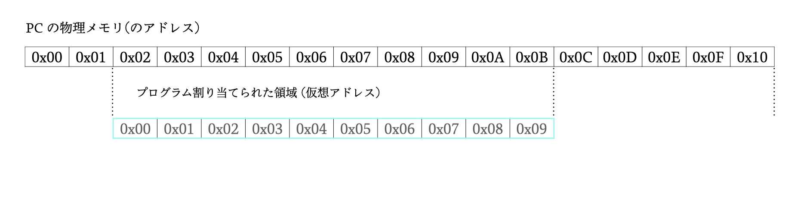
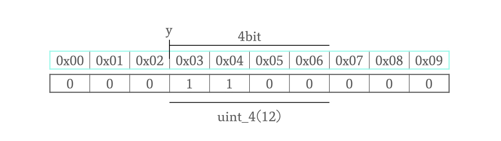
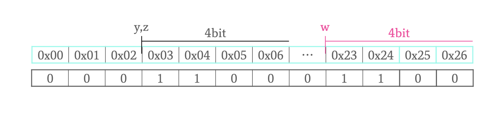
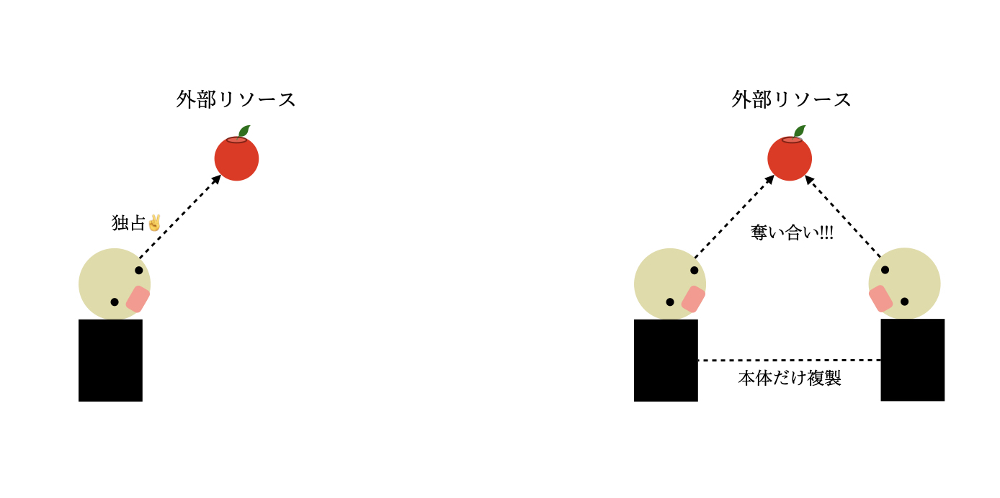
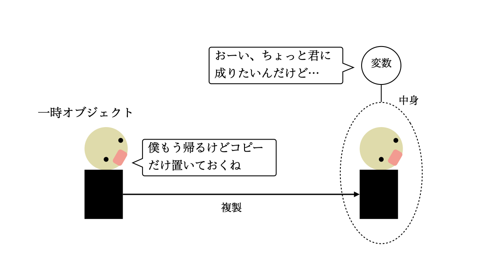
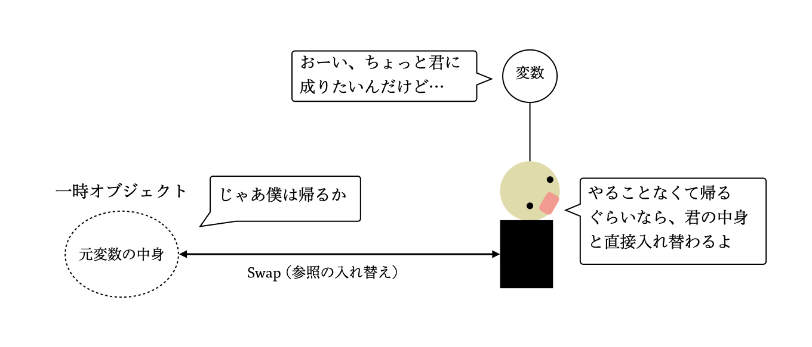
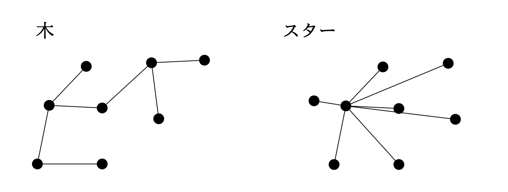
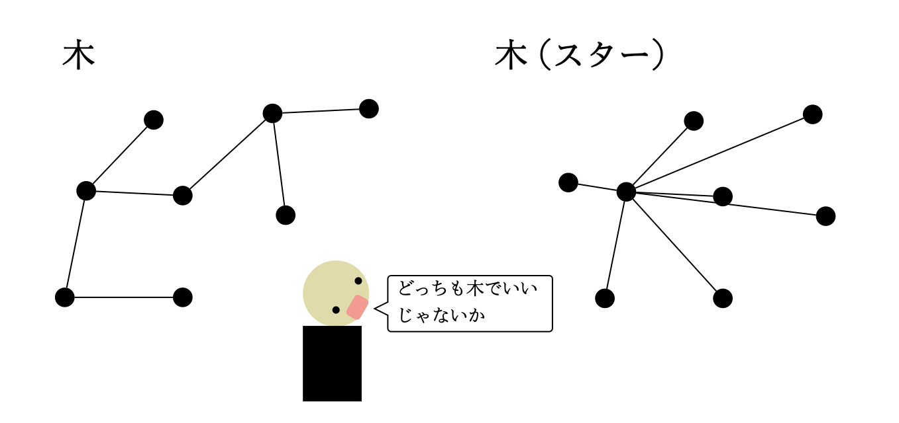

この記事には、ぼくどんが C++ の参考書を読み進めていく中で疑問に思ったことなどを補足して書いてあるので、初心者が単独で参考書を読むよりはすんなりと読んでいけるのではないかと思います。
この記事を読むにあたって、C++ とはそもそも何なのかという話をしようと思います。C++ に関する基礎的な話もありますが、C++ を軽く使う程度なら知らなくても良い話もありますので、読むかどうかは読者にお任せします。
言語という概念に対して、日常で使用される一般的なものを想像しても問題ありませんが、特に C++ プログラミングの文脈では以下の \(2\) つから成り立つものを表します。
例えば英語で、SVO 構文は S が O に対して V を行うという意味を持つ文を生成します。また、I や like などのキーワードは、文において特定の意味を持つキーワードの一つです。
C++ 言語は、この構文とキーワードによって定義された一つの概念なのです。また、C++ 言語によって定義される機能を言語機能と言います。
C++ 言語の変更、すなわち構文とキーワードの変更は C++ のバージョンアップという形で提供されます。C++ のバージョンアップには、言語の変更に加えて 標準ライブラリ の変更が含まれます。ライブラリは言語機能ではなく、C++ 内で使用可能な、すでに第三者によって実装されたプログラムのことです。
C++ のバージョンは、C++XX のようにバージョンのリリース年の下 \(2\) 桁を接尾辞につけて表現されます。例えばこの Column の執筆時点で最新バージョンは C++23 です。ただし 100 年後この命名規則がどうなっているかはわかりません。
C++ を用いる上で、最低限必要な構文やキーワードを紹介します。
+ や && など、式に使用される演算子
0,1,2,3,4,5,6,7,8,9 や "hello world" など、ソースコード内に直接書かれた定数。
if(条件 A){
A が真の場合に処理される命令
}else{
A が偽の場合に処理される命令
}
while(条件){
条件が真である間実行され続ける命令
}
コンピュータが 0/1 の情報をもとに処理を行うというのは有名な話です。当然、C++ のソースコードのような人間寄りな言語はコンピュータに理解されないのです。
コンピュータに命令を行うためには、C++ ソースコードを 実行ファイル(実行可能ファイル) に変換(翻訳)する必要があります。この実行ファイルは OS ごとに形式が違います。というのも、OS (CPU) にはそれぞれ異なる命令セットという概念があり、この実行ファイルはこの命令セットに属する命令を用いて指令を送るのです。
例えば g++ や clang は C++ ソースコードを実行ファイルに翻訳するプログラムです。一般には、これらのプログラムが C++ コンパイラと呼ばれます。ただし、実際の g++ の翻訳プロセスではコンパイルに加えて、プリプロセッサ処理 や リンク などの処理を行います。
ここではソースコードをコンパイルする前段階の処理を行います。プリプロセッサは、ソースコードをコンパイルする前にインクルードファイルを展開したり、ソースコードのマクロ部分を置換する処理などを行います。目に見えるものではないので想像しづらいですが、いわゆるおまじないとして知られる #include や #define などがこれにあたります。
コンパイルという処理は、この記事で説明するにはあまりにも複雑です。おおまかに説明すると、C++ 言語の構文から、ソースコードの文を翻訳することがコンパイラの仕事です。この仕事は、字句解析/構文解析/最適化 などの複数のステップからなります。
コンパイラと比較されるものとして インタープリタ があります。インタープリタは Python などのスクリプト言語で使用されます。コンパイラがソースコードを実行ファイルに翻訳するのに対して、インタープリタはソースコードに書かれた命令を解釈して実行します。すなわち、スクリプト言語のソースコードはインタープリタへの入力にすぎず、実際にプログラムとして実行されているのはインタープリタなのです。
先のコンパイルの結果、中間ファイル(オブジェクトファイル)というものが生成されます。これらの中間ファイルは、リンクの段階で結合されて一つの実行ファイルになります。この際、リンカは関数のリンクを行い、ソースコード内に登場する、これまでは属性のみが明らかだった関数が実際にどんな処理を呼び出すのかを明らかにします。
(逆に、コンパイルの時点では、ソースコードに登場する関数は、返り値の型とシグネチャ(名前と引数の型の情報)さえ分かっていれば、その関数が具体的にどのような処理を行うかは分からなくても良いのです。)
g++ や clang にもバージョンがあります。C++ のバージョンと混同されがちですが、g++ や clang のバージョンは、言語のバージョンではなく、コンパイラやリンカといったプログラムのバージョンです。ただし、コンパイラのバージョンに応じてコンパイル可能な C++ のバージョンが変わるため、無関係ではありません。
先に紹介したコンパイルとリンクによって、C++ ソースコードから実行ファイルをビルドする方法について説明します。なおこの節は、C++ 入門用に読んでいる方は飛ばして大丈夫です。入門用程度のプログラムであれば単一ファイルで済む場合がほとんどなので、以下のコマンドですぐにビルドできます。(main.cpp にコードを書く場合)
g++ main.cpp
ソースコードは、複数のファイルに分けて記述することができます。複数のファイルに分けることは、ソースコードの見やすさを向上させるだけでなく、ビルド時間の効率にも影響します。この際、特に注目すべきは ヘッダーファイル と ソースファイル の存在です。
結論から言うと、ヘッダーファイルには関数の宣言(返り値やシグネチャの情報)が書かれ、ソースファイルにはそれらの定義(中身)が書かれます。必ずこうである必要はないですが、この節ではこう書く理由を説明します。なお、筆者の環境は mac OS です。
まず、関数 int calc_fib(int) を例に考えることにします。上記の説明の通り、この関数を二つのファイル fib.hpp と fib.cpp で書くことにします。(ファイルの拡張子は、.hpp がヘッダーファイル、.cpp がソースファイルです。)
int calc_fib(int);fib.cpp
int calc_fib(int x){
if(x == 0)return 1;
if(x == 1)return 1;
return calc_fib(x-1)+calc_fib(x-2);
}
そして、main 関数が書かれるソースファイル main.cpp は以下の通り書きます。
#include "fib.hpp"
#include<iostream>
int main(){
std::cout << calc_fib(4) << std::endl;
}
main.cpp を見ると、fib.hpp を include している様子がうかがえます。この部分は、前節で述べたプリプロセッサ処理により、fib.hpp に書いた内容を main.cpp ファイルのソースコードとして展開することを意味します。これにより、今は main.cpp から calc_fib() 関数の属性がわかっている状態です。
前節の通り、この状態では コンパイル を行うことができます。main.cpp のコンパイルは、g++ コマンドに -c オプションをつけて以下の通り行うことができます。
g++ -c main.cpp
こうすることで、main.o という 中間ファイル が生成されました。この中間ファイルは、main.cpp および、そこからインクルードされるファイルに書かれていることをコンパイルした結果です。
今回の場合、main.cpp および fib.hpp がコンパイルされたことになりますが、これらの中には calc_fib 関数の中身が書かれていないので、このままではプログラムを実行できません。次は、main.o で呼び出される calc_fib 関数の処理を、fib.cpp ファイルに書かれた内容と リンク する必要があります。
まず、calc_fib 関数のソースファイルを先ほどと同様にコンパイルします(g++ -c fib.cpp)。すると同様に、 fib.o という中間ファイルが生成されます。この中間ファイルには calc_fib() 関数の中身がコンパイルされています。
こうしてできた中間ファイル同士を、-o オプションを用いて以下の通りリンクします。
g++ main.o fib.o -o out
こうして、main.o と fib.o の二つの中間ファイルをリンクして、out という実行ファイルを得ることができました。このように main.cpp と fib.cpp を別々にコンパイルすることで、fib.cpp すなわち calc_fib に変更があった際に、main.cpp ファイルをコンパイルし直し必要がなくなります。(リンクは必要です)
逆に、main.cpp と fib.cpp を同時にコンパイルする(例えば、fib.cpp の中身を直接インクルードして展開するなどの)場合、fib.cpp に変更があれば、その内容を直接使用している main.cpp の部分も再度コンパイルしなおす必要が出てくるため、コンパイルの時間効率が悪いのです。
個人で書く簡単なコードであればこの時間を効率化する必要性も薄いですが、大規模なコードのコンパイルではここの時間の効率化は効果が大きいのです。
C++ 言語は、言語機能およびプログラムとしての仕様を定義したものです。C++ ソースコードをアセンブリや機械語に変換するときのルールまでは定義しておらず、翻訳時のルールはコンパイラの開発元に任されます。
様々なアーキテクチャに対応できるよう、C++ 言語の仕様だけ定めて、各環境下での実装はコンパイラの開発元に任せるという形になっているのです。
C++ に限らず、プログラムというのはコンピュータのメモリ (RAM) 上の領域を書き換えたり読み込んだりして動作します。

メモリ領域上での位置をアドレスと呼び、例えば上の図ではこれから実行するプログラムに物理メモリの \(\mathrm{0x02}\) から \(\mathrm{0x0B}\) までの領域が割り当てられています。
基本的にプログラムの実行はメモリ上でのアドレスの指定、アドレス内の要素の読み書きの処理で行われます。よってプログラムを実行するには、コンピュータにメモリ上での読み書きを指示する必要があります。
ところが、以下の自前定義のソースコード (説明のため簡略化済み) を見るに、そのような指示がされているようには見えません。
uint_4 y = 12;
std::cout << y << std::endl;
// & をつけるとアドレスを確認できる
std::cout << &y << std::endl;
なぜなら、メモリ上の操作を人間が指示するのはあまりに大変なため、C++ の文法はメモリ上の具体的なアドレスを、プログラマがソースコード中で識別子 (名前) を与えた変数に割り振ることで、人間が理解しづらい部分を違和感なく隠蔽しているのです。
1.1.1 宣言と定義変数名、関数名といった風に、ソースコードにはプログラマが自分で決めた名前を使用する場面が多くあります。このような名前は識別子とも呼ばれます。識別子を使うために、プログラマはその識別子に対して宣言を行います。
宣言とは、ある識別子を使用することを宣言する命令のことです。例えば関数の宣言は、その関数のシグネチャ (その関数の引数リストの情報) と返り値の情報を合わせて以下のように書きます。
// 型名 識別子(パラメータの型リスト);
int multiply(int , int);
これで、\(2\) つの int を受け取り、int を返す関数の名前として multiply が使われていることが宣言されました。なお、一つの (型などが同じ属性である) 識別子に対する宣言がソースコード中に複数回登場しても問題はありません。
そして関数の定義とは、その関数の中身の処理が具体的に書かれている部分のことです。
例えば以下のように関数の処理を記述することで、関数を定義することができます。なお、C++ では定義は宣言を兼ねるものと考えて問題ありません。
// 宣言 & 定義
int multiply(int a, int b){
return a*b;
}
ただし、一つの識別子に対して定義が \(2\) つ以上存在するとコンパイルエラーになり、使用されている識別子に対して定義が一つもなければリンクエラーになります。
また変数に関しては、基本的に宣言のみの記述は存在せず、uint_4 x; のように、宣言のみに見える場合でもしっかり定義はされていることに注意が必要です。
uint_4 y = 12; という命令では、uint_4 型 (4 bit整数とする) を表現できるサイズのメモリ領域が確保され、y という識別子にその領域の先頭のアドレスが割り当てられます。

先に説明した通り、識別子とはプログラマが人間目線で使用する名前のことであり、コンピュータはプログラムを動かすために名前にメモリ上の領域と結びつけます。例えば、上の図では変数 y がメモリ上のアドレス \(0x03\) に束縛されます。またこの時、はじめに示したソースコードは以下のように読み替えることができます。
uint_4 y = 12; \(\rightarrow\) \(4\) bit 整数を表現するメモリ領域の先頭のアドレス \(\mathrm{0x03}\) を識別子 y に割り当て、割り当てられた領域のデータを \(12\) に書き換える。
std::cout << y << std::endl; \(\rightarrow\) メモリ上のアドレス \(\mathrm{0x03}\) から \(4\) ビットを読み込み、出力する (出力の命令の詳細は割愛)。
ただし、std::cout << y << std::endl; が \(\mathrm{0x03}\) を出力しないように、ソースコード上では変数は基本的に自身が持つアドレスが指す領域に格納されたデータとして振る舞います。
以降、変数について言及する際は、変数が持つアドレスについてではなく、その変数に割り当てられたメモリに格納されているデータについて言及しているものとして話を進めます。
上記のコードに登場した std::cout と << 演算子について説明します。これは出力を行うオブジェクトであり、渡されたデータは標準出力にストリーム出力されます。コマンドライン上でプログラム実行しているとき、特に指定がなければコンソール画面が標準出力となります。そのほかにも、コマンドラインでコマンドの後ろに >> ./out.txt とつけると std::cout の出力先は out.txt (テキストファイル) になります。
全てのデータを一気に出力する方法とは異なり、ストリーム出力ではデータを一つずつ出力していきます。例えば、上記の std::cout << y << std::endl; は、標準出力に y と std::endl を送信する命令です。ただし、ストリームと名がついているものの、実際は内部的にデータをバッファに溜めて、何らかのタイミングでそれを標準出力に送信するという処理になっています。
これが原因で、ストリームでリアルタイムに出力しているように見えて、実は想像しているタイミングで出力できていないことがあります。バッファのデータを明示的に標準出力に送信するためには、std::flush などを std::cout に投げる必要があります。
変数を活用するためには、その中にデータを格納する必要があります。格納するデータを決める命令には、初期化と代入の \(2\) つがあります。それぞれを以下で説明します。
uint_4 y = 12; のように = を用いて中身を決めることができる。ただし、uint_4 x; のように = で明示的に中身を決めない場合も変数 x は自身の型 uint_4 のデフォルトの方法で初期化される。
= を用いて変数の中身を変更すること。
プログラムで使用されるメモリは、その用途によって以下の \(3\) 種類に大別されます。
TODO : 説明を書く。
1.2.2 スタック
for 文や関数の定義などに登場する { ... } で囲まれた部分をブロックとよびます。ブロックは、そのブロック直下で宣言した変数の有効な範囲(スコープ)としても機能します。ブロック直下の変数はスタック領域上に生成され、処理がそのスコープ外に出るとき (その階層の .. } に到達した時) に破棄されます。
ヒープ領域上に生成されたオブジェクトは、明示的に破棄しない限りプログラムを通して生存します。
先に述べた通り、ブロックで生成されたオブジェクトはそのブロック(スコープ)の外に出る際に自動的に破棄されます。ブロック内で生成したオブジェクトを、そのブロックの外でも使用したい場合は、自分で直接ヒープ上の領域を確保し、そこに直接オブジェクトを生成するなどの方法をとることができます。
T* p = new T() と書くことで T 型のオブジェクトをヒープ領域上に生成します。このとき、T 型のポインタ p は、T 型オブジェクトが生成されたアドレスを指します。また、delete p と書くことでポインタ p に格納されたアドレス上のオブジェクトを破壊してメモリを解放します。ただし、ポインタ p が配列の先頭を指している場合は delete [] p でメモリを解放する必要があります。
C++ においては、変数やデータなど、ソースコードに登場する主体をオブジェクトと言います。オブジェクトは C++ の主役でもあるので、コードを書く際にはきちんとした理解と注意が求められます。
変数のように、メモリ上のアドレスが割り当てられているオブジェクトを左辺値と呼びます。それに対して、3.14 や "okoteiyu" のように自分自身がデータであるものを右辺値ないし一時オブジェクト、あるいは単に値と呼びます。
右辺値の特徴として、役割を終えるとすぐに破棄されることなどがあります。
変数そのものに束縛されたオブジェクトを参照あるいは左辺値参照と言います。参照は型名の後ろに & をつけて uint_4& z = y; のように宣言&定義でき、変数 z を変数 y そのものに束縛すると表現します。この時、変数 z は変数 y そのものとして振る舞います。つまり変数 z は変数 y の別名のオブジェクトと言えます。
uint_4 w = y; のように通常の初期化によって変数の中身を決めると、代入元のデータのコピーを生成するコストがかかってしまいます。このように宣言&定義された変数 w は、変数 y とは別のアドレスに領域が確保され、そこに y のデータがコピーされます。

それに対して、型名の直後に & をつけて宣言すると、先述の参照によって変数の別名を作ることができ、データのコピーのコストをなくすことができます。以下は参照を使用する様子です。
int x = 0;
int& ref_x(){
return x;
}
int main(){
int y = 12;
int& z = y;// y の参照
y = 2;
std::cout << y << " == " << z << std::endl;
int nx = ref_x();// 新たな変数を ref_x のデータで初期化
int& x2 = ref_x();// 新たな参照の作成
ref_x() = -1;// 参照元のアドレスのデータの変更
std::cout << "nx == " << nx << std::endl;
std::cout << x << " == " << x2 << std::endl;
return 0;
}
以下は出力です。
2 == 2
nx == 0
-1 == -1
std::vector のように、複製のコストが重いものを複製したい場合には、そのオブジェクトの別名を増やすことで大きいデータの複製を省略できます。ただし、増やした変数の中身を書き換えると当然元の変数の中身も変わるので一層注意が必要です。
スタック領域に生成したオブジェクトはいつか破棄されます。よって、そのようなオブジェクトの参照は、そのオブジェクトが破棄される前に無効化されるべきです。たとえば以下のプログラムを考えましょう。
int& refer_int(int i){
int& r = i;
return r;
}
int main(){
int& r = refer_int(15);
std::cout << "中身チェック : " << r <<std::endl;
}
以下は自分の環境での出力です。
中身チェック : 1
refer_int(15) は \(15\) を指す変数を参照しているつもりなのに、出力は \(1\) でした。参照元の変数がブロックを抜けて無効化され、参照元のオブジェクトが破棄されてしまったからです。参照を使用する場合、参照元の寿命に注意する必要があります。
また、別名の変数がブロックの終端で無効化されても参照元が破棄されたりはしません。影響を持つのは参照元の寿命です。
int I = 998244353;
if(I > 0){
int& ref = I; // I を参照
} // ref の有効なブロックが終了
// I はまだ生存中
printf("%d\n" , I);
大きな範囲のブロックの中で、その中のほんの一部でしか使用されないオブジェクトがあると、そのオブジェクトは大きな範囲を無駄に生存することになります。一部でのみ使用するオブジェクトと関連する処理を、単体のブロック {} の内部に記述することで、そのオブジェクトが生存する範囲を効率化することができます。
int main(){
{
std::string check = "First Check";
std::cout << check << std::endl;
}
/*
何らかの処理
*/
{
std::string check = get_result();
std::cout << check << std::endl;
}
}
普通、プログラムは一連手続きを複数の関数の実行や変数のやり取りによって処理を行います。C++ のようなオブジェクト指向言語では、一連の手続きなどをクラスと呼ばれるモデルで定義し、プログラマはそのモデルから生成されたオブジェクトを介して処理を命令します。
例えば二次元平面上の点は全て \((x,y)\) 座標という共通のデータを持つので、以下のように Point クラスとして定義することで、よりわかりやすいコードを記述することができます。
#include<cmath>
#include<cassert>
#include<initializer_list>
class Point{
protected:
// メンバ変数 (1e200 で初期化)
double x = 1e200;
double y = 1e200;
double rad_ = 1e200; // 横軸とのなす角 (データ)
public:
// コンストラクタ
Point() : x(0) , y(0) {}
Point(double x_, double y_) : x(x_) , y(y_) // 初期化子リストでデータの初期化
{
if(x != 0)this->rad_ = atan2(y,x);
}
// デストラクタ
~Point(){}
// コピーコンストラクタ
Point(const Point& p){
assert(this != &p);
this->x = p.x;
this->y = p.y;
this->rad_ = p.rad_;
}
// コピー代入演算
Point& operator=(const Point& p){
if(this == &p)return (*this);
this->x = p.x;
this->y = p.y;
this->rad_ = p.rad_;
return (*this);
}
// ムーブコンストラクタ
Point(Point&& p) = default;
// ムーブ代入演算
Point& operator=(Point&& p) = default;
// 横軸とのなす角 (インターフェース)
double rad(){
if(x != 0)this->rad_ = atan2(y,x);
return this->rad_;
}
// 並行移動
void slide(double a , double b){
this->x += a;
this->y += b;
}
};
詳細は後で説明しますが、Point A(1,2) , B(5,5); のように書くことで、Point クラスのオブジェクトを宣言&定義できます。A と B はそれぞれ異なる \(2\) 点 \((1,2)\) と \((5,5)\) を表していますが、これらはいずれも Point 型オブジェクトの定義通りに \((x,y)\) 座標のデータをもつ同種の存在であると言えます。
またオブジェクト指向を活かすため、あるオブジェクトに関して実行したい処理はあらかじめクラスに定義しておき、オブジェクトを介して処理を実行すると良いです。例えば点の並行移動を行う際、クラス外から Point オブジェクトの x,y を直接操作するのではなく、Point に定義した関数 (slide) を介して処理を命令することで並行移動を行います。
クラス内で定義される変数や関数を、そのクラスのメンバと言います。上の例では変数 x , y , rad_ や関数 rad() などがメンバです。例えば、オブジェクト A の rad() 関数を呼びたい場合は、A の後ろに . で続けて A.rad() のようにして呼び出すことができます。ただし、protected や private なメンバは、クラスの定義の外からアクセスすることができません (ここでは詳細は割愛)。
オブジェクト A から A.rad() を呼び出すと、A のデータ \((1,2)\) をもとに関数が実行されます。オブジェクト B から B.rad() を呼び出すと、B のデータ \((5,5)\) をもとに関数が実行されます。
また this というキーワードは 自分自身を指すポインタです。クラスの定義でメンバにアクセスする場合は this-> を用いてアクセスします。ただし省略することもできます。
あるクラスのオブジェクトを生成する際はデータの初期化を行う必要があります。初期化を定義する機能をコンストラクタといい、クラス名と同じ名前で定義します。初期化時に渡すパラメータに応じて、複数種類のコンストラクタを書くこともできます。
// パラメータを取らないコンストラクタ
Point() : x(0) , y(0) { /*メンバへの代入などの実装*/ }
// 座標をパラメータにとるコンストラクタ
Point(double x_, double y_) : x(x_) , y(y_) { /*メンバへの代入などの実装*/ }
コンストラクタを呼び出す際は、基本的に Point A(1,2); のように クラス名 変数名(パラメータリスト); の構文で呼び出しますが、さまざまな亜種が存在します。例えば、Point A = {1,2}; や Point A{1,2}; のように、波括弧でパラメータリストを囲うことで、そのパラメータリストに対応したコンストラクタが呼び出される場合があります。「場合」とあるように、以下の状況ではその限りではありません。
std::initializer_list を受け取るコンストラクタが存在する場合
std::initializer_list については後述します (2.1.6 項)。
デストラクタは delete によってメモリが解放される時や、オブジェクトが宣言されたブロックを抜ける時に破棄される (1.2.2 項参照) 際の処理を定義します。デストラクタは ~ (チルダ) の後ろにクラス名を書いて定義します。
~Point(){ /*メンバを破棄する実装*/ } オブジェクトの複製 (コピー) を定義するメンバは二種類存在します。
まず \(1\) つ目は、以下のように同じクラスのオブジェクトの参照を受け取るコピーコンストラクタです。コピーコンストラクタの用途は初期化であり、以下のように定義します。コピーの実装をこれからするのですから、パラメータは値渡し(コピー)ではなく参照渡しで受け取ります。
Point(const Point& p){ /*メンバのコピーの実装*/ }
\(2\) つ目は、後述する演算子オーバーロードを用いて定義される、同じクラスの参照を受け取る = (コピー代入演算子) です。コピー代入演算子の用途は代入です。
Point& operator=(const Point& p){ /*メンバのコピーの実装*/ }
代入演算は自分自身の参照を返すように実装するのが典型的です。こうすることで、C++ の int のように A = (B = C) と代入を結合することができます。ちなみに、A = B = C と書いてもプログラムは A = (B = C) と同じ動作をします。これは、自前定義した演算も言語の組み込み演算子 (int の a = b*2 など) と同じ結合規則を持つと決められているからです。
また、コピーは自分自身をコピーする場合に気をつけて実装する必要があります。ここで言う同じとは、同じデータを持つことではなく、同一のオブジェクトであることです。例えば、Point のコピー代入演算では、パラメータ p の持つアドレス &p が this (自身のアドレス) と同じ場合、何もせずに終了するようしています。
最後に、クラスがクラス外のリソースにアクセスするかどうかを注意する必要があります。例えばメンバに外部へのポインタをもつオブジェクトが複製されてしまうと、リソースにアクセスするオブジェクトは増えたのに、リソース自体は増えないという状況になります。

このような場合、参照しているリソース自体も複製するか、コピーをPoint(const Point& p) = delete; と書いたり private にするなり、コピーを禁止して対策を取ることができます。
前の項で説明したコピー機能の定義では、コピーで受け取るパラメータ（仮引数）は自身と同じクラスの参照です。パラメータが参照なので、以下のような右辺値の代入はできないように思えます。
Point A;
A = Point(5,9); // コピー代入演算
しかし、実際は右辺値参照という機能のおかげで const 参照であれば右辺値を参照することができます。よって上記のコードは有効です。
右辺値参照によって、一時オブジェクトの寿命はその一時オブジェクトを参照する変数の寿命が切れるタイミング以降まで先延ばしにされます。例えばコピー演算のパラメータ const Point& p が Point(1,2) を受け取る場合、変数 p の寿命までは Point(1,2) が破棄されないことが保証されています。
なお、右辺値を参照する方法は先述の const 参照を含めて \(2\) 種類存在します。
const Point& のように const な変数で参照する
Point&& のように & を \(2\) つ書いて参照する
これら \(2\) つの方法どちらも有効なとき、右辺値を参照する場合は \(2\) の方法が優先されます。このことによって、コピーとは別に右辺値のムーブを定義することができます。
Point クラスのコピーの実装を見ると、パラメータ p のデータをメンバに複製しています。

もしパラメータ p が右辺値を参照しているなら、右辺値は一時的な用途しかないので、p のデータを複製するのではなく p のデータの参照と自身のデータの参照 swap をすることで複製のコストをなくすことができます。例えば、C++ の STL コンテナは、そのデータサイズに関わらず \(O(1)\) 時間の swap が定義されています。

そこで、上記の \(2\) の方法で 右辺値のみを パラメータとして受け取る、ムーブコンストラクタとムーブ代入演算を定義します。ムーブは特別な事情がない限りデフォルトのものに任せておいて構いません。
// ムーブコンストラクタ
Point(Point&& p) = default;
// ムーブ代入演算
Point& operator=(Point&& p) = default;
なお、右辺値参照とムーブは別の概念であることに注意してください。右辺値参照とムーブはどちらも右辺値を受け取ることができますが、右辺値参照が C++ の言語機能であることに対して、ムーブはクラスごとにプログラマが定義する機能です。
例えば Point A = std::move(B); では、変数 B を一時オブジェクトとして扱うことで B を受け取るムーブが呼び出され、B の中身が変数 A に移譲されます。この結果、B の中身は未定義になります。
対して Point&& A = std::move(B); と書いた場合、B を一時オブジェクトとして扱うことで言語機能の右辺値参照が働き、変数 A が一時オブジェクト std::move(B); を参照します。この場合、A は B を参照するだけで、ただの参照渡しと同じ結果になります。これ以降 A は単なる左辺値として扱われます。
コンストラクタの後ろに : で続けて記述した部分を初期化子リストと言います。ここではメンバのコンストラクタを呼び出して、メンバの初期化を行うことができます。例えば Point(x_,y_) コンストラクタでは、Point コンストラクタの処理が行われる前に、: 以降の部分でメンバ x と y のコンストラクタ x(x_) , y(y_) が呼び出されます。
初期化子はメンバを初期化するので、代入が禁止されている const なメンバの初期化などで使います。このとき、: 以降の部分で初期化されるメンバの順番は、クラス内で宣言されたのが早い順であることに注意が必要です。
// 引数がなければ座標は原点とする
Point() : x(0) , y(0) {} // メンバのコンストラクタを呼んでいる
ところで、Point クラスの定義の中で、メンバ変数の宣言&定義は x と y を 1e200 で初期化されるように指示されています。しかし初期化子リストを持つコンストラクタが呼ばれた場合、初期化を指示したメンバ変数に対しては変数の宣言&定義で指示した初期化が行われず、初期化子リストに記述した初期化のみ行われます。
そしてなんとびっくり、初期化子リストは別の概念を指す場合があります。それは、C++ のコンテナである std::initializer_list<T> です。<T> はテンプレートパラメータです (\(4\) 章で説明します)。
std::initializer_list<T> は T 型オブジェクトを複数個保存するデータ構造です。このリストを受け取るコンストラクタを定義することで、波括弧 {} によるサイズに制限が無いパラメータリストを受け取る初期化を行うことができます。
// メンバは double なので、double の初期化子リストを受け取る
Point(std::initializer_list<double> iList){
// 今回のデータメンバは 3 つしか無いので、サイズが 4 以上はエラ-とする
assert(iList.size() <= 3);
std::initializer_list<double>::const_iterator itr = iList.begin();
if(itr == iList.end())return;
// iList に要素が 1 つ以上あるので、x に代入する
this->x = *(itr++);
if(itr == iList.end())return;
// iList に要素が 2 つ以上あるので、y に代入する
this->y = *(itr++);
if(itr == iList.end())return;
// iList に要素が 3 つ以上あるので、rad_ に代入する
this->rad_ = *(itr++);
}
2.1.2 項で述べた通り、std::initializer_list を受け取るコンストラクタを作ってしまうと、波括弧 {} でパラメータリストを囲って、そのパラメータリストと対応するコンストラクタを呼び出すことができなくなります。ただし、{} の中身が空の場合はデフォルトコンストラクタが呼ばれることに注意してください。
Point a = {-1 , 0 , 3.14}; // rad_ まで定義される (initializer_list)
Point b{}; // (デフォルトコンストラクタ)
Point c{2,3}; // y まで定義される (initializer_list)
Point d(2,2); // コンストラクタ
Point e = {}; // デフォルトコンストラクタ
以下のように、コンストラクタに応じたパラメータを渡すか、= でコピー初期化を行うことでオブジェクトの初期化を行うことができます。コピー初期化は代入ではなく、あくまで初期化であることに注意してください。
// コンストラクタ呼び出し
Point default_point;
Point A(0,0);
// コピーコンストラクタによる初期化 (代入ではない)
Point B = A;
// コピー省略
Point C = Point(2,1);
// コピー
B = A;
// ムーブ
A = std::move(C);// 以降、C の中身は未定義
// 右辺値参照
Point&& D = std::move(A);// 変数 D を A に束縛
これまでの話から概ね理解ができる文法ですが、\(1\) つだけ謎な初期化が含まれていますね。
Point C = Point(2,1);
これは何でしょうか。これまでの話を踏まえると、右辺の Point(2,1) が一時オブジェクトを生成して、それを左辺 C のコピーかムーブのコンストラクタが受け取ると考えるでしょう。
しかし実際は、この初期化ではコンパイラによる最適化が働き、ムーブコンストラクタは呼ばれず、コピーコンストラクタの呼び出しさえ省略されます。なおコピーやムーブが呼ばれなくても、左辺 C はちゃんと右辺 Point(2,1) で初期化されます。
デストラクタ、コピーコンストラクタ、コピー代入演算子、ムーブコンストラクタ、ムーブ代入演算子の \(5\) つは、自分で定義しなければ、コンパイラが勝手に用意してくれる場合があります。自前定義のもの以外を禁止したい場合は、以下のように関数を delete して明示的に禁止することができます。
// コピーコンストラクタを禁止する場合
Point(const Point& p) = delete;
コピー/ムーブのような代入を一つの代入演算子で定義することができます。
// 代入演算
Point& operator=(Point p){
if(this == &p)return (*this);
// メンバのスワップ
std::swap(this->x, p.x);
std::swap(this->y, p.y);
std::swap(this->rad_, p.rad_);
return (*this);
そもそも関数に値渡しを行う際、関数の仮引数(実引数を受け取る変数)は実引数(実際に関数に渡すオブジェクト)を受け取り、コピーまたはムーブのコンストラクタによって初期化されます。コピー/ムーブ のコンストラクタが定義されているなら、実引数が左辺値ならコピーコンストラクト、右辺値ならムーブコンストラクトされます。
値渡しされたオブジェクトからコンストラクトされた仮引数 p は、上記のメンバ関数のブロックの終端で破棄されてしまいます。このメンバ関数外で p が使用されることはないので、仮引数 p のデータはこのメンバ関数内で好きに扱っても問題ありません。上記の代入演算内で、p と自身のデータを交換することで、この代入関数に渡したオブジェクトは最終的に自身に代入されます。
コピー&スワップイディオムにはいくつかの利点がありますが、今回は特にコピー代入とムーブ代入を 1 つのメンバで定義できるという利点がわかることでしょう。
プログラムを通して初期化以外で変更がないオブジェクトを const なオブジェクトと呼びます。不変であることがわかっているオブジェクトには const 修飾子をつけて宣言を行うことで、コンパイラによる最適化やバグの抑止に繋がります。
プログラムを通して、const オブジェクトの const 性はプログラマが明示的に担保する必要があります。例えば、車を表す const なオブジェクト Car と、車の重さを表すメンバ関数 weight() があるとします。
class Car{
private:
double w;
public:
Car(double w_):w(w_){}
double weight(){
return this->w;
}
};
int main(){
const Car Demio(1020.0);// 初期化
// コンパイルエラー : const オブジェクトに対して 非 const メンバ関数の呼び出し
std::cout << Demio.weight() << std::endl;
}
weight() 関数は Car クラスの中身を変更することはなく、const 性を損ねないので const な Car オブジェクトに対する処理として適当に思えます。しかし、weight() 関数が Car の中身を変更しないかどうかというのは、コンパイラの知るところではないのです。
ここでは、中身を変更しないことが明示的に担保された weight() 関数をプログラマが用意しておく必要があります。クラスのメンバ関数宣言の後ろに const 修飾子を付けることで、const なメンバ関数として宣言することができます。const なメンバ関数にはメンバ変数に対する非 const な命令を書くことはできません。
double weight() const {
return this->w;
}
なお、コンパイラは const オブジェクトに変更が行われていないかどうかをコードだけを見て判断します。具体的には、const なオブジェクトに対して const ではないメンバ関数が呼ばれていないかを確認します。つまり、コンパイラは const なオブジェクトに対して実際にデータが変更されたかを確かめることはないため、const なメンバ関数であってもメンバ変数の変更が禁止されているわけではないのです。
実際、mutable をつけて宣言したメンバ変数であれば const なメンバ関数内で非 const な処理を命令することができます。一見矛盾に思えるかもしれませんが、例えば次のような場合を考えてみてください。
余分な桁のデータを解放するという処理では当然データ変数を変更する必要がありますが、ここでは余分な桁を削除したところでそのオブジェクトが表す整数の値は変わりません。このように、オブジェクトが表すものの同一性が保持される範囲であれば、メンバ変数を変更することも戦略の一つなのです。
C++ のクラスには継承という概念があります。ベースとなるクラスを基底クラスと呼び、基底クラスの性質を継承したクラスを派生クラスと呼びます。例えばグラフ理論における木を表すクラスを考えてみます。
抽象的な点を線で結んだ構造をグラフと言います。このとき、点のことを頂点と言い、点同士を結ぶ線のことを辺と言います。特に、どの \(2\) 点間の経路も一意に定まるグラフを木と言い、ある点が他の全ての点と隣接している木をスターと言います。

プログラムでグラフを表現する場合、各頂点には番号が割り振られているものとして表現します。ここで、整数のペアを辺として列挙することでグラフを表現できるので、木構造のクラスは以下のように定義できます。
class Tree{
private:
int V; // 頂点数
vector<pair<int,int>> E; // 辺集合
public:
Tree(){}
// テスト用
void identify(){
printf("this is Tree\n");
}
void identify(int x){
printf("this is Tree # %d\n" , x);
}
};
このように宣言した Tree クラスは一般の木構造を表現するクラスです。しかし実際のところ木構造にもさまざまな種類があり、例えば特殊な木構造の例として先述のスターがあります。このような特殊なインスタンスを表現するときに、例えば Tree クラスから派生した Star クラスを以下のように定義します。
class Star : public Tree{
private:
int center; // スターの中心の頂点の番号
public:
Star(){}
void identify(){
printf("this is Star\n");
}
};
このとき Star クラスは Tree クラスのメンバを持ちながら Star クラス特有のメンバを追加で持つことができます。例えば int center; という記述は Tree クラスにはない、Star 特有の記述です。Star 型オブジェクトからは基底クラスである Tree に定義したメンバにアクセス可能ですが、Tree 型オブジェクトからは派生クラスである Star で定義されたメンバにアクセスすることは基本的にはできません(2.4 項で例外を説明)。
Tree (基底クラス) と Star (派生クラス) に同一のメンバ関数が存在するとどうなるでしょうか。
Tree と Star を確認するとどちらにも identify() という関数があります。お察しかもしれませんが、Tree オブジェクトから identify() を呼び出すと Tree クラスの identify() が呼び出され、Star オブジェクトから identify() を呼び出すと Star クラスの identify() が呼び出されます。
派生クラスで同名の関数を宣言した場合、基底クラスの同名の関数は隠蔽され、派生クラスを通してその関数にアクセスされなくなります。これを hiding(ハイディング , 隠蔽) と言います。隠蔽は基底クラスの同名の関数全てに対して行われます。Star に identify() を宣言したなら、Tree の identify(), identify(int x) はともに隠蔽されます。
例えば Tree クラスで、\(1\) つの Node (頂点) クラスを受け取り、単一のノードからなる木を構築する代入演算子 = (後で紹介) を定義していたとしましょう。さて、先ほど派生クラスに基底クラスと同名のメンバを宣言すると、基底クラスの同名のメンバ関数が全て隠蔽されると説明しました。また 2.1.8 項では、コピー代入演算やムーブ代入演算の = がコンパイラによって自動で生成されることがあると説明しました。これらのことから、派生クラス (Star) で = を宣言しなくても、コンパイラによって自動で生成された = (コピー代入やムーブ代入) によって、Node クラスを代入する = が隠蔽されてしまう可能性があるとわかります。
コンストラクタ類を派生クラスで定義しても、基底クラスのコンストラクタ類は隠蔽されません。通常のコンストラクタの場合、Star(Node v) : Tree(v) {} のように初期化子リストの部分で基底クラスのコンストラクタを呼び出すことで、基底クラスのメンバを初期化することができます。なお、初期化子リストで基底クラスのコンストラクタを呼ばなかった場合、自動的に基底クラスのデフォルトコンストラクタが呼ばれます。ちなみに、コンストラクタの初期化子リスト内では、Tree の例と同様に同クラス内のコンストラクタを呼び出すことができます。こうして呼び出されるコンストラクタを、委譲コンストラクタと言います。
そして、コピーコンストラクタの初期化子リストで基底クラスのコンストラクタを呼ばなかった場合、自動的に基底クラスのコピーコンストラクタが呼ばれます。この場合、基底クラスの部分のみが基底クラスのコピーコンストラクタでコピーされることになります。ムーブコンストラクタの場合も、同様に基底クラスのムーブコンストラクタが呼ばれます。しかしこれでは基底クラスの コピー/ムーブ コンストラクタに派生クラスの実引数が渡されることになってしまいます。一見コンパイル不可能に見えますが、実はこれは問題ありません。次の節で説明する言語機能によって基底クラス型の仮引数は派生クラス型の実引数を参照できるのです。
okoteiyu (執筆者) はアルゴリズムの勉強をしているので Star は一般の Tree クラスと比べて特殊なインスタンスだとわかりますが、一般の人が Tree と Star に大きな違いを見出す保証はありません。普通の人にはどれも全て同じ木構造に見えるのです。

共通のベース (基底クラス) を持ちつつ、さまざまな属性 (派生クラス) に分岐するようなクラスを記述するとき、基底クラスの参照から派生クラスにアクセスできるように設計をします。コーディングの点で説明すると、基底クラス型変数は、派生クラス型オブジェクトを参照することができるのです。これは基底クラス型の & を用いた参照に加えて、基底クラスのポインタ型による参照にも言える話です。
基底クラスの型のポインタは、派生クラスの領域を指すこともできます。例えば、Star は Tree の派生クラスなので以下のように記述してもプログラムは正常に動作します。
Tree* ptr = new Star();
このことを利用し、基底または派生クラスのオブジェクトをヒープ領域に生成し、そのアドレスを指すポインタを返す関数を作ります。この関数は、生成するオブジェクトの種類に関わらず基底クラスの型のポインタを返すようにします。
Tree* makeTree(){
return new Tree();
}
Tree* makeStar(){
return new Star();
}
Tree* makeBinaryTree(){
return new BinaryTree();
}ヒープ上のオブジェクトにポインタを介してアクセスすることの利点として、オブジェクトの破棄のタイミングを自由に決定し、自身でオブジェクトの寿命を管理できることなどがあります。このような観点から、前項で紹介した関数だけにオブジェクトの生成を許可し、スタック領域にオブジェクトを生成することを禁止したい場合があります。
そこで、コンストラクタを private にしてクラス外からのコンストラクタの呼び出しを制限します。
class Star : public Tree{
private:
int center; // スターの中心の頂点
Star(){}
public:
// 外部で定義する makeStar 関数に private メンバへのアクセスを許可
friend Tree* makeStar();
};
これで、Star の生成を制限することができました。
しかしクラス外でのコンストラクタ呼び出しを一切禁止してしまうと、makeStar() 関数でのオブジェクト生成ができなくなってしまいます。そこで、Star クラス内で makeStar() 関数を friend 宣言しておき、makeStar() 関数に Star クラスの private なメンバへのアクセスを与えます。
関数の friend 宣言をする場合、アクセスを許可したい関数の宣言を、先頭に friend 修飾をつけてクラスの内部に記述します。クラスの friend として宣言された関数は、その関数の実装がクラスの定義の外に書かれていても、そのクラスの private なメンバへのアクセスが許可されます。
また、以下のように関数宣言の後に直接定義を書くこともできます。
class Star : public Tree{
private:
int center; // スターの中心の頂点
Star(){}
public:
// 定義を書いても OK
friend Tree* makeStar(){
return new Star();
}
};
ただし friend な関数をクラス内で定義していても、この関数はクラスのメンバではありません。よって関数呼び出しの際は、単に Tree* p = makeStar(); のように通常の関数スタイルで呼び出します。
関数宣言の頭に virtual と付けた関数を仮想関数と言います。
class Tree{
virtual void identify(){
printf("this is Tree\n");
}
}
基底クラスと派生クラスに同名の関数が存在するとき、基底クラスの関数は隠蔽によって派生クラスからアクセスできなくなると説明しました。では、基底クラスのポインタで派生クラスのオブジェクトにアクセスする場合はどうなるのでしょうか。これを Tree クラスと Star クラスの両方で宣言した identify() 関数の例で考えます。
結論から言うと、通常の関数であれば、どちらが呼ばれるかはポインタの型に依存します。つまり、Star* で Star オブジェクトにアクセスしているならば当然 Star.identify() が呼ばれ、Tree* で Star オブジェクトにアクセスしているならば Tree.identify() が呼ばれます。しかしこの挙動は期待される挙動ではないため、Tree* からでも Star.identify() が呼ばれるようにしたいです。
そこで、基底クラス (Tree) で宣言する identify() の頭に virtual 修飾子をつけます。こうすると、呼ばれる関数は実際に生成されたオブジェクトに依存するようになり、Tree* でアクセスしていようと、Star オブジェクトにアクセスしていれば Star の identify() が呼ばれます。こうすることで、派生クラスオブジェクトに基底クラスの参照からアクセスし、派生クラスオブジェクトとして動作させることが可能になりました。これがポリモーフィズムです。
特殊な関数として、C++ の演算子 + , *= , / , && などと同名の関数を定義することを演算子オーバーロードと言います。通常の関数と異なり、演算子の定義では関数名(演算子)の直前に operator をつけて宣言します。
modint131 を自作する場合を考えます。
以下の実装は、複合代入演算子の \(1\) つである += を定義した様子です。
struct modint131{
protected:
int v;
public:
modint131(int v_):v(v_){}
modint131& operator+=(const modint131& x){
this->v += x;
this->v %= 131;
return (*this);
}
}
modint131 オブジェクト P に対して、演算子として定義された関数 operator+= を呼び出す際、operator の部分を省略して単に P += 314; のように書くことができます。これは P.operator+=(314); と同じです。
なお、複合代入演算子も 2.1.4 項で述べたコピーの注意点に気をつけて定義してください。
剰余環の要素にも整数と同じく二項演算 + , - , * などを定義したいので、自作クラスに演算を定義する方法をこれから説明します。
二項演算はメンバ関数として定義することができるので、以下のように + を定義できます。
struct modint131
const modint131 operator+(const modint131& m){
return modint131(this->v + m.v);
}
}
また、より直感的な書き方として modint131 を \(2\) つパラメータにとる、通常の (メンバでない) 関数をグローバルに定義するという方法があります。
const modint131 operator+(const modint131& a , const modint131& b){
return modint131(a.v + b.v);
}
ただし、このグローバルな関数では modint131 の protected なメンバ v にアクセスできる必要があるので、この関数 が modint131 のメンバにアクセスする権限を持つということを、friend を用いて以下のように modint131 の中で明示的に宣言しておく必要があります。
struct modint131
// friend 指定した関数は、クラス外からも private メンバにアクセスできる
friend const modint131 operator+(const modint131& , const modint131&);
}
前に述べた通り、friend 宣言の直後に関数の定義を書くこともできます。実は、このように直接定義を書くことが効果的な場面があります (後に紹介)。
struct modint131
friend const modint131 operator+(const modint131& a, const modint131& b){
return modint131(a.v + b.v);
}
}
あるオブジェクトを、別のクラスのオブジェクトに変換することをキャストと言います。例えば、bool 型オブジェクトは以下のように書くことで int 型オブジェクトにキャストできます。
bool t = true;
int y = (int)t;// 1
int n = int(!t);// 0
このコードでは int() や (int) と付けることで、int 型へのキャストを明示しました。これを明示的なキャストと言います。
別の例として、関数にパラメータを渡す際に行われるキャストを例示します。
void printReal(double x){
std::cout << x << std::endl;
}
int main(){
long long i = 314;
printReal(i);
}
printReal() 関数の引数は double ですが、long long 型 (整数型) を渡してもコンパイルエラーしません。これは関数宣言で引数の型を見て、long long 型から double に勝手にキャストを行なっているからです。これを暗黙的なキャストと言います。
パラメータをちょうど \(1\) つ取るコンストラクタを、変換コンストラクタ (convert constructor) と言います。パラメータのデータを自身に変換すると考えると、その名の通り変換 (キャスト) を行なっていることが理解できます。
例として U 型のオブジェクトから T 型のオブジェクトへのキャストを定義する場合を考えます。
// キャスト元
struct U{
double value;
U(double v) : value(v) {}
};
// キャスト先
struct T{
int value;
T(int v) : value(v) {}
// 変換コンストラクタ
T(U v){
this->value = int(v.value); // v のデータをこのクラス用に変換
}
// ムーブ代入演算
T& operator=(T&& v) = default;
};
2.1.7 項で述べた通り、以下のように int から T 型オブジェクトを初期化することができます。
int main(){
T obj = T(2); // 初期化
obj = U(0.4); // 代入
}
ここで、初期化の右辺は T 型を明示しているので、これは明示的な変換コンストラクタ呼び出しです。この初期化は T obj = 2; のように書いて右辺の 2 を T(2) に暗黙的にキャストさせることもできます。
また代入の場合、ムーブ代入演算の右辺の型が T 型で宣言されているので、右辺の U 型オブジェクト U(0.4) は T 型へのキャストを要求され、T 型に定義した変換コンストラクタによって、U 型 \(\rightarrow\) T 型に暗黙にキャストされることになります。
少し特殊な演算子オーバーロードによって、U 型から T 型へのキャスト演算を定義できます。キャスト演算は、operator 変換先型名(){ 中身 } の構文で定義できます。
// キャスト元
struct U{
double value;
U(double v) : valuue(v) {}
// キャスト
operator T() {
/* 自身のデータを T 型に整形し、T 型の値を return する */
}
}
上記 \(2\) つの実装は暗黙的なキャストの実装ですが、紹介した \(2\) つのキャストの方法はいずれも、宣言を explicit で修飾することで明示的なキャストにすることができます。
キャストが設計されたクラスはユーザーにとってのコードの書きやすさを向上させる一方、暗黙のキャストよって望まない動作が引き起こされる可能性もあります。天下り的ですが、modint131 に関してキャストに工夫がないコードを例示します。
#include<iostream>
using std::ostream;
// 自動で mod m の値 (あまり) をとる整数クラス
class modint131{
protected:
int v;// 内部でもつ値
public:
// コンストラクタ 兼 キャスト
modint131(int v_){
v = v_%131;
if(v<0)v+=131;
}
// int 型へのキャスト
operator int() const& {return int(this->v);}
friend ostream& operator<<(ostream& ostrm, const modint131& x){
ostrm << x.v;
return ostrm;
}
// 2 つの modint131 オブジェクト同士の足し算
friend const modint131 operator+(const modint131& a, const modint131& b){
return modint131(a.v + b.v);
}
};
int main(){
modint131 a = 8;
std::cout << a + 4 << std::endl;
}
メイン関数に a + 4 と書かれているのが見えますか。これがまずいです。
modint131 は整数型と双方向に暗黙的なキャストができるように設計されているため、a + 4 は a + modint131(4) なのか int(a) + 4 なのかがわかりません。このコードはコンパイルエラーになります。
このように、\(2\) つのクラス A と B にキャストを設計するとき、プログラマは A , B どちらを優先するかの順序を決める必要があります。case by case ですが、基本的に優先したいクラスへのキャストは勝手に行われてほしいので、優先したいクラスへのキャストを暗黙的にし、優先しないクラスへのキャストを明示的にします。また、優先順位がない場合はどちらも明示的なキャストにすると良いです。
例えば先に例示した int と modint131 の例では、modint131 が使われている以上は int よりも modint131 を優先したいはずなので、modint131 へのキャストを暗黙的にし、modint131 \(\rightarrow\) int のキャストは明示的にします。こうすることで、a + 4 の部分が a + modint131(4) を一意に指すようになって解決です。
また、テンプレートの章でこの問題のダメな解決法に少しだけ触れます。
ソースコードに識別子が登場した時、その識別子が何を指しているのかを特定する必要があります。ソースコードに識別子が登場した時、コンパイラはソースコードから識別子の宣言を探索して識別子が何かを特定します。この作業を名前解決と言います。
異なるスコープをまたぐ場合などでは、複数の異なるオブジェクトに同じ識別子を宣言&定義することができます。例えば、同一の識別子が存在する複数のスコープ同士がネストの関係にある場合、ソースコードに登場する識別子の名前解決は、その識別子が登場した時点で有効な宣言&定義のうち直近のものが採用されます。
このように、同名の使用は言語機能的には可能ですが、以下のコードのように分かりづらいコードになってしまう可能性もあります。
struct TestObject{
TestObject(){
std::cout << "TestObject has been generated" << std::endl;
}
};
TestObject gen_obj(){
TestObject Obj;
return Obj;
}
// これ以降、TestObject 識別子は int 型変数を参照する
int TestObject = 12;
int main(){
auto obj = gen_obj();
std::cout << "TestObject = " << TestObject << std::endl;
auto TestObject = [&]() -> void {std::cout << "TestObject is used as function" << std::endl;};
TestObject();
}
以下は出力です。
TestObject has been generated
TestObject = 12
TestObject is used as function
こんなのどうみてもダメですよね。しかし適切にコーディングを行えば、同じ名前をつけることは良いことにもなります。
名前解決で名前を探索する際に、ソースコードのどこを探索して欲しいかをコンパイラに指示することができます。識別子 Y が、X::Y のような構文で登場した時、コンパイラは X によって定められる範囲から識別子 Y の宣言を探します。
この時、探索を指示する範囲を名前空間として記述することができます。名前空間は識別子を宣言するスコープであり、異なる名前空間では同名の識別子を使用することができます。名前空間は namespace 名前空間名{ 中身 } という構文で定義できます。
名前空間を用いると、同じ名前の関数やクラスを場面に応じて複数個用意することができます。例えば先述の Point クラスを二次元座標用だけでなく三次元座標用にも定義したい場合、以下のように書くことができます。
// 二次元幾何ライブラリ
namespace my2dGeoLib{
using Real = double;
struct Point{
Real x , y;
Point(Real x_,Real y_):x(x_),y(y_){}
};
// 三点 A,B,C を結ぶ三角形の面積
Real Area(Point A,Point B,Point C){return 1;}
}
// 三次元幾何ライブラリ
namespace my3dGeoLib{
using Real = double;
struct Point{
Real x , y , z;
Point(Real x_,Real y_,Real z_):x(x_),y(y_),z(z_){}
};
// 三点 A,B,C を結ぶ三角形の面積
Real Area(Point A,Point B,Point C){return 1;}
}
また以下は my2dGeoLib 名前空間に書いた関数を呼び出す様子です。
int main(){
std::cerr <<
Area(
my2dGeoLib::Point(1,4),
my2dGeoLib::Point(0,0),
my2dGeoLib::Point(5,5))
<< std::endl;
return 0;
}
ここで、Area() に my2dGeoLib:: を付けずに呼び出せていることに注目してください。Area() 関数の実引数に my2dGeoLib:: 名前空間の Point が渡されているので、Area() 関数も my2dGeoLib:: 名前空間の識別子だろうとコンパイラが解釈してくれます。その結果、Area の my2dGeoLib:: を省略することができます。これを Argument Dependent Lookup (ADL , 実引数依存の名前探索) と言います。
また、using namespace 名前空間名; と書くことで名前空間の指定を省略できますが、これは名前空間の利点を崩壊させるので良くないです。とはいえ、std::vector などといちいち書くのは時間の無駄というのもその通りです。そこで、全ての機能で名前空間の指定を省略する代わりに、using 名前空間名::使いたい機能; のように省略したい機能だけ using で宣言しておくことで、名前空間の恩恵をある程度残したまま、名前空間の指定を省略することができます。
数値を出力する printNumber(x) 関数はパラメータ x の型によって出力が異なります (小数点以下など)。printInt(x) や printDouble(x) のように関数を分ければ解決なのですが、数値を出力するという目的を考えるとこれらの関数の区別を意識する必要はなく、やはり全て printNumber(x) であることがベストプラクティスに思えます。
そこで、引数の型それぞれに対して printNumber(x) 関数を定義することにします。同じスコープに同名の関数を複数個定義することを関数のオーバーロードと言い、それらの関数はパラメータリストなどの属性の違いによって区別されます。
void printNumber(int x){
std::cout << x << std::endl;
}
void printNumber(double x){
std::cout.precision(20);// 有効数字 20 桁
std::cout << x << std::endl;
}
int main(){
printNumber(14);
printNumber(7.0/9);
return 0;
}
以下は出力です。
14
0.77777777777777779011
C++ では、テンプレートと呼ばれるものを用いて、汎用性/再利用性の高いコードを記述する仕組みがあります。この仕組みをジェネリクスと言います。多くの場合では、ジェネリクスを活用することでコードの記述量を大きく減らすことができます。
クラスや関数の、型や値などのパラメータへの依存を抽象化したものをテンプレートと言い、関数を抽象化したものを関数テンプレート、クラスを抽象化したものをクラステンプレートと言います。
DoubleNumber() は引数の数を \(2\) 倍したものを返すものとします。3.3 節で述べたように、引数と返り値は int にも double にも short にもなり得ます。このような引数や返り値のバリエーションをテンプレートパラメータで抽象化して関数宣言や定義を行うことができます。これが関数テンプレートです。
以下は、DoubleNumber() の型をテンプレートパラメータ T で抽象化した関数テンプレートです。
template<typename T>
T DoubleNumber(T x){
return x*2;
}
int main(){
std::cout << DoubleNumber<int>(3) << std::endl;
std::cout << DoubleNumber<double>(1.82) << std::endl;
return 0;
}
以下は出力です。
6
3.64
テンプレート引数 (テンプレートパラメータ) T の部分を具体的に定めることを、特殊化 と言います。例えば DoubleNumber<int>(3) は DoubleNumber<T> を int 型に特殊化した関数です。
ちなみに、関数テンプレートにパラメータリストを渡さなかった場合、型推論によって関数の引数に適合するテンプレートパラメータが自動で決定されます。例えば、DoubleNumber((long long)1e15); は型推論によって DoubleNumber<long long>((long long)1e15); になります。
例えば、テンプレートを使わずに 4.1.1 項で例示したプログラムと同じ処理を行おうとすると、関数オーバーロードを用いて以下のように書くことになります。
int DoubleNumber(int x){
return x*2;
}
double DoubleNumber(double x){
return x*2;
}
int main(){
std::cout << DoubleNumber(3) << std::endl;
std::cout << DoubleNumber(1.82) << std::endl;
return 0;
}
4.1.1 項のコードが上記のプログラムと同様に動作できるのは、コンパイラが main 関数内で特殊化された DoubleNumber<int> や DoubleNumber<double> を確認し、DoubleNumber<T> 関数テンプレートから、プログラムの実行に必要な int ver. と double ver. の DoubleNumber 関数を生成するからです。
このように、テンプレートで抽象化されたクラスや関数は、特殊化によって必要になったもののみ、テンプレートパラメータの部分を具体的に定めたコードがソースコード内に展開されます。これを実体化またはインスタンス化と言います。
他にも実体化と関連する例をコードで例示してみます。まず、以下のコードがコンパイルエラーになることを確認してみます。
struct TemplateInstance{
TemplateInstance(){
const int ConstInt = -1;
ConstInt = 1;
}
};
int main(){
return 0;
}
以下はコンパイル結果です。
test.cpp: In constructor 'TemplateInstance::TemplateInstance()':
test.cpp:4:18: error: assignment of read-only variable 'ConstInt'
4 | ConstInt = 1;
| ~~~~~~~~~^~~
const な変数に代入を行うので、これは当然コンパイルエラーです。次は TemplateInstance に意味もなくテンプレートをつけてコンパイルしてみましょう。
template<typename T>
struct TemplateInstance{
TemplateInstance(T val){
const int ConstInt = -1;
ConstInt = val;
}
};
int main(){
return 0;
}
自分の環境ではこのコードのコンパイルが通ります。
TemplateInstance はプログラムの実行に必要ないためクラステンプレートが実体化されなかったのだろうと推察できます。試しに main 関数に TemplateInstance を特殊化したクラスを記述してみたら、見事コンパイルエラーになりました。ちなみに、クラステンプレートは関数テンプレートと異なり、テンプレートパラメータの型推論が行なわれないため、テンプレートパラメータを省略することはできません。
int main(){
TemplateInstance<int> I(2);
return 0;
}
以下はコンパイル結果です。
test.cpp: In instantiation of 'TemplateInstance::TemplateInstance(T) [with T = int]':
test.cpp:10:30: required from here
test.cpp:5:18: error: assignment of read-only variable 'ConstInt'
5 | ConstInt = val;
| ~~~~~~~~~^~~~~
前述した const チェックを除き、実体化する前のテンプレートの定義に対しても構文のチェックは行われます。これは Two Phase Name Lookup に関するリファレンス にも書かれています。
実体化前の構文チェックでは、コンパイラはテンプレートで抽象化された基底クラスの中身を見ることができません。テンプレートで抽象化された部分の名前解決は、実体化のタイミングまで後回しにされるのです。例えば以下のクラステンプレートを考えてみましょう。
template<typename T>
struct Tree{
int root;
T value;
};
template<typename T>
struct Star : public Tree<T>{
Star(){
root = 0;
}
};
以下はコンパイル結果です。
test.cpp: In constructor 'Star::Star()':
test.cpp:9:9: error: 'root' was not declared in this scope
9 | root = 0;
| ^~~~
Star は基底クラスとして T で抽象化された Tree<T> を持ちます。よって T を具体的に定めた記述が登場するタイミングまで、コンパイラは Tree<T> の中身を見ることができず、root が Star の定義に登場しても、Tree<T> で宣言された Tree<T>::root を検索できずにコンパイルエラーになります。
ここでの解決策として、this をつけて root にアクセスすることにします。
template<typename T>
struct Tree{
int root;
T value;
};
template<typename T>
struct Star : public Tree<T>{
Star(){
this->root = 0;
}
};
this は struct Star : public Tree<T> のことです。this->root と書くことで root は T で抽象化された部分になり、テンプレートの実体化すなわち Tree<T> を見ることができるようになるタイミングまで root の名前解決を遅らせることができるのです。
2.6 節で少し触れた modint (剰余環) クラスのテンプレートを実際に作ってみましょう。2.6 節では \(\mathrm{mod}\space 131\) に特化した剰余環でしたが、今回の modint は \(\mathrm{mod}\) をとる値をパラメータ \(M\) として抽象化した (簡易的な) modint を作ることにします。
まず、クラスのテンプレートパラメータには型名だけでなく、実行時の処理に依存しない値を渡すことができます。実行時の処理に依存しない値を用いた計算はコンパイラによる最適化が期待できるので、抽象化できるパラメータはテンプレートパラメータにしておくのが良いです。特に、実行時に決まる値で割る計算とコンパイル時点で決まっている定数で割る計算では、コンパイラの最適化によって処理速度に大きな差が出ます。
template<long long M>
class modint{
protected:
long long m_val;
public:
modint(){}
// これから中身を定義していく
};
これから作るクラスは modint<M> なのですが、クラスの定義の実装ではテンプレートパラメータの部分 <M> を省略して単に modint と書くことができます。もちろん、\(M\) 以外で \(\mathrm{mod}\) をとる modint<X> が登場するなら、<X> は省略してはいけません。
クラスのメンバ関数をテンプレート化したものを、メンバ関数テンプレートと言います。ここでは、modint の変換コンストラクタのパラメータを、I で以下のように抽象化しておきます。
template<typename I>
modint(I v_){
this->m_val = (long long)(v_)%M;
if(m_val<0)m_val+=M;
}
こうすることで、このコンストラクタは、コンストラクタの実装に登場する I \(\rightarrow\) long long のキャストが定義されてさえいるなら、そのような任意の I 型オブジェクトを引数にとることができます。
また、modint から別の型へのキャストも同様に抽象化します。
template<typename I>
explicit operator I(){
return I(this->m_val);
}
これで modint は、long long \(\rightarrow\) I のキャストが定義されている任意の型 I にキャストできるようになりました。
あとは代入演算子やキャスト演算を作って、足し算や出力ストリーム (std::cout << とかで見るやつ) の二項演算を friend で登録 & 定義して、、、、大体こんなもんでしょうか。
template<long long M>
class modint{
protected:
long long m_val;
public:
modint(){}
// コンストラクタ and I 型からのキャスト
template<typename I>
modint(I v_){
this->m_val = (long long)(v_)%M;
if(m_val<0)m_val+=M;
}
// I 型へのキャスト
template<typename I>
explicit operator I(){
return I(this->m_val);
}
// 複合代入演算
modint& operator+=(const modint& g){
this->m_val += g.m_val;
return *this;
}
// 出力ストリーム
friend ostream& operator<<(ostream& , const modint&);
// 足し算
friend const modint operator+(const modint& , const modint&);
};
template<long long M>
ostream& operator<<(ostream& ostrm , const modint<M>& x){
ostrm << x.m_val;
return ostrm;
}
template<long long M>
const modint<M> operator+(const modint<M>& a, const modint<M>& b){
return modint<M>(a.m_val + b.m_val);
}
残念、これは罠です。問題は friend 宣言した関数にあります。modint 定義の中で、確かに + や << 演算が宣言されていますが、テンプレートの宣言が別にあることが問題です。
例えば modint<998244353> がソースコードに登場した場合、modint<998244353> の実体化と同時に operator+ が特殊化され、const modint<998244353> operator+ が実体化されようとします。
ところが、テンプレートの実体化が行われるためには、テンプレートが特殊化された場所よりも前にテンプレートの宣言が書かれている必要があるのです。operator+ は関数テンプレートの宣言が、クラス内の friend 宣言で特殊化されるよりも後ろで記述されているため、実体化の際に関数テンプレートを見つけることができず、リンクエラーとなります。
そこで、抽象化されたクラスの friend 関数の宣言と定義をクラス内で直接行うと、この問題を解決できます。
friend ostream& operator<<(ostream& ostrm, const modint& x){
ostrm << x.m_val;
return ostrm;
}
friend const modint operator+(const modint& a, const modint& b){
return modint(a.m_val + b.m_val);
}
または、friend にしたい関数の関数テンプレートの宣言を modint クラスより前で前方宣言することでも解決できます。以下は改善した modint の例です。
#include<iostream>
using std::ostream;
// 前方宣言
template<long long M>
class modint;
// 前方宣言
template<long long M>
ostream& operator<<(ostream& , const modint<M>& );
template<long long M>
class modint{
protected:
long long m_val;
public:
modint(){}
// コンストラクタ and I 型からのキャスト
template<typename I>
modint(I v_){
this->m_val = (long long)(v_)%M;
if(m_val<0)m_val+=M;
}
// I 型へのキャスト
template<typename I>
explicit operator I(){
return I(this->m_val);
}
// 複合代入演算
modint& operator+=(const modint& g){
this->m_val += g.m_val;
return *this;
}
// friend 宣言
friend ostream& operator<< <M>(ostream&, const modint& );
// 足し算の宣言 + 定義を直接書く
friend const modint<M> operator+(const modint<M>& a, const modint<M>& b){
return modint<M>(a.m_val + b.m_val);
}
};
// 定義
template<long long M>
ostream& operator<<(ostream& ostrm , const modint<M>& x){
ostrm << x.m_val;
return ostrm;
}
int main(){
modint<3> m = 2;
std::cout << m + 5 << std::endl;
return 0;
}
2.6.3 項では、operator+ が int + int と modint + modint のどちらで解決されるかを制御するために、型変換の優先度を考えるという話をしました。実は、上例の operator+ の定義を、friend 宣言に直接記述する形から、前方宣言を追加してクラススコープ外に記述する形に変えると、名前解決されなくなってしまいます。これには型変換が絡んでいるようですが、原因を十分に調査できていないので TODO としておきます。
2.6.3 項の例でキャストによる問題点について触れました。2.6.3 項では、キャストの暗黙,明示をきちんと使い分けることで問題を回避しましたが、実はテンプレートによる危険なソリューションが存在します。
modint<M> からのキャスト演算は I で抽象化されており、I 型への explicit (明示的) なキャストを定義します。explicit であることは、2.6.3 項で述べた解決法に従っているからです。ここで試しに explicit を外して、このキャストを暗黙にしてみましょう。
template<typename I>
operator I(){
return I(this->m_val);
}
残念、エディタさんに怒られて警告が出てしまいました。しかしコンパイルは通ります。実は C++ にはキャストの優先順位なるものが存在しているため、キャストを抽象化したことでなぜかうまい具合に仕様とマッチした様です。非常に不思議ですね。
最後にこれまでの章とは別方向の話ですが、C++ で追加された機能について紹介して終わります。
例外処理とは、プログラム内で意図しない動作が行われたときにエラーを投げて、それを受け取ったプログラムにエラーを処理させることです。この場合のエラーとは、実行時エラーやコンパイルエラーではなく、あくまでプログラムは動作しているが自分の意図した動作と異なることを指しています。
C++ では、try ブロックの中で発生した例外 (エラー) を、catch ブロックで受け取って処理する形になります。この時、throw を使って try ブロックから例外を投げ出します。これを例外の送出と言います。
try{
if(意図しない結果){
throw int(0); //try ブロックを抜けて、catch ブロックを探す
}
}
catch(int er){ //int型の例外を受け取る catch ブロック
std::cerr<<"例外番号 : " << er << std::endl
}
catch(...){//デフォルトの例外を受け取る catch ブロック
std::cerr<<"例外が起きました" << std::endl;
}
この例では、try ブロックの中で例外が発生した場合、throw を用いて int 型の例外を送出します。try ブロックから送出された int 型の例外は、直後の catch(int er) にキャッチされ、処理されます。ここでもし int 型以外の例外が投げられたなら、catch(int er) の次の catch(...) が例外を処理します。
また、例外が送出されたブロックで catch が行なわれなかった場合、例外は自身が発生したブロックから抜け出して、上位の try ブロックやコールスタック上位の呼び出し元関数に遡って catch ブロックを探します。特に関数を考える場合、コールスタックを遡って catch に到達できるならば、今の関数内に try と catch を記述して例外処理を行う必要はなく、throw で例外を関数の呼び出しもとに送出することができます。
void make0(int *p){
if(p == nullptr)throw int(0);
else *p = 0;
}
int main(){
try{
make0(ptr);
}
catch(...){
printf("例外が投げられました\n");
}
}
この場合、make0 で投げられた例外は make0 のブロックでは catch されず、その \(1\) つ上位ブロックである main() の try ブロックに移り、その直後で catch されて例外処理されることになります。
上例では例として int 型の例外を送出していましたが、C++ では汎用的な例外オブジェクトとして std::exception が用意されています。std::exception er からは、例外の詳細を er.what() で確認することができます。特に、その派生クラスの std::runtime_error にはエラーメッセージを自由に渡すことができるため、基本的にはこの例外オブジェクトを使用すると良いでしょう。
関数の後に noexcept とつけることで、その関数が例外を返さないことを指示することができます。noexcept な関数に throw を書いた場合、コンパイルは通りますが、実際に実行時に例外が送出されるとプログラムが終了します。
このことは、関数が例外を送出するかどうかを指示する以上の意味を持ちます。例えば、ある関数が例外を送出するかどうかを noexcept(E) によって判定することができます。noexcept(E) は、式 E が例外を発生するかどうかをコンパイル時に評価し、その結果を true/false で返します。結果がコンパイル時に評価されるため、その結果をテンプレートパラメータで使用する TMP が可能になります。例えば、std::move_if_noexcept(x) は x のムーブ演算が noexcept の場合に限り、x を右辺値にキャストします。
疲れました......... 間違ってたらドシドシ指摘してください。